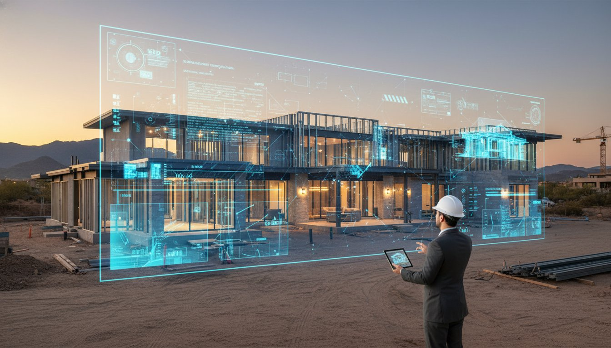
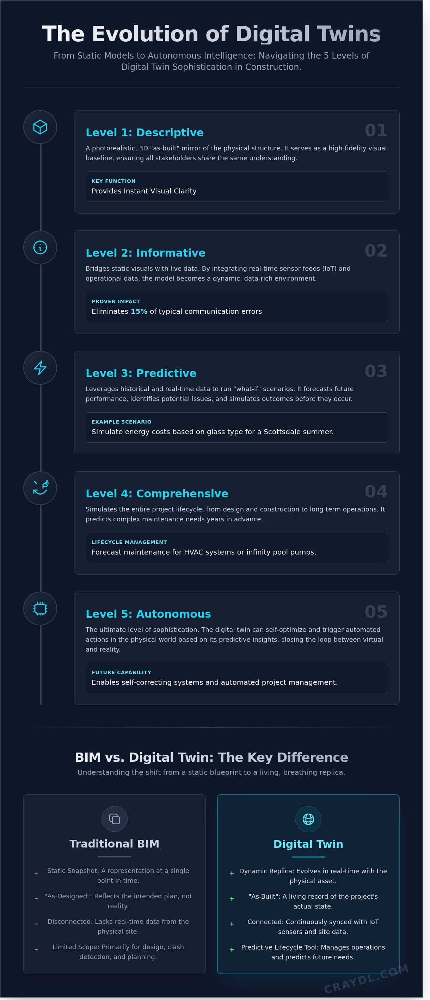

Digital Twin Construction: The 2026 Guide to Virtual Building Excellence

What if you could walk through your finished luxury build months before the first foundation stone is laid? In an industry where a 3% measurement error can trigger $75,000 in structural rework, the traditional "build and adjust" method is dead. By 2026, digital twin construction has emerged as the ultimate insurance policy for elite developers. It's the only way to achieve studio-quality visual certainty while bypassing the logistical nightmares that haunt standard job sites.
You've likely felt the frustration of a design that looks flawless on paper but fails the moment the steel hits the site. We agree that the gap between vision and reality shouldn't cost you your profit margin. This guide promises to show you how to leverage virtual excellence to eliminate surprises and ensure zero-clash execution. You'll discover how to create a permanent digital record that gives homeowners total peace of mind. Scale your precision, protect your timeline, and deliver photorealistic results every single time.
Key Takeaways
- Master the shift from static models to live, streaming replicas that mirror your physical project in real-time.
- Navigate five levels of digital intelligence to select the exact level of sophistication your luxury build demands.
- Learn how digital twin construction transforms traditional BIM snapshots into a dynamic, predictive lifecycle tool.
- Eliminate "invisible clashes" and costly surprises before ground is broken using pro-grade, photorealistic certainty.
- Leverage CRAYDL’s silent expertise to bridge the gap between your vision and a studio-quality virtual twin instantly.
What is Digital Twin Construction?
Forget everything you know about static blueprints. Digital twin construction transforms a project from a flat image into a living, breathing virtual replica. Unlike a traditional 3D model that sits frozen in time, a digital twin is a dynamic mirror of your physical site. It syncs real-time data to ensure what you see on screen matches exactly what's happening on the ground. This isn't just a visualization; it's a high-performance engine for project delivery.
At its core, understanding What is a Digital Twin? means recognizing the shift from "As-Designed" to "As-Built." This single digital thread connects every phase of development. It eliminates the gap between the architect's vision and the contractor's reality. You get total transparency. You get instant feedback. You get a pro-grade tool that evolves alongside your building, capturing every change in seconds.
To better understand this concept, watch this helpful video:
The Evolution from 2D to Digital Twinning
Construction technology has moved fast. We've transitioned from paper blueprints to BIM, and now we've arrived at the twin. Industry analysts project that 2026 will be the definitive tipping point for residential adoption. By that year, over 35% of large-scale residential projects in Scottsdale will likely utilize these models to manage complexity. This shift brings "Photorealistic Certainty" to pre-construction. You can walk through a finished home before a single nail is driven. It's not just a guess; it's a verified preview that saves weeks of potential rework.
Core Technologies Powering the Twin
The magic happens through a blend of high-end hardware and lightning-fast software. These three pillars make it possible:
- LiDAR and 3D Laser Scanning: These tools capture site data with millimetric accuracy. They create a massive point cloud that serves as the foundation for your virtual build.
- IoT Sensors: These devices provide real-time environmental and structural feedback. They turn a static model into a "living" asset that reacts to temperature, humidity, and load-bearing stress.
- Cloud-based VDC Platforms: Virtual Design and Construction platforms enable instant stakeholder collaboration. Teams can access the same data in seconds, ensuring everyone stays on the same page regardless of their location.
This tech stack ensures your digital twin construction workflow is seamless. It's about speed. It's about quality. It's about building with a level of precision that was physically impossible five years ago. You're no longer just managing a site; you're orchestrating a high-tech digital asset.
The 5 Levels of Digital Twin Sophistication
Digital twins are not a one-size-fits-all solution. They represent a spectrum of intelligence that evolves alongside your project. Understanding these five levels allows Scottsdale builders to match technology to the specific demands of luxury estates. Each tier adds a layer of "magic" that removes traditional logistical hurdles and accelerates the path from blueprint to reality.
From Descriptive to Informative Twins
Level 1 is the Descriptive twin. It serves as a photorealistic, 3D "as-built" mirror of the physical structure. This level provides instant visual clarity, ensuring every stakeholder sees the same pro-grade model. Level 2 is the Informative twin. It bridges the gap between static visuals and live data by integrating real-time sensor feeds. These two stages are the essential foundation for any high-performance residential BIM service. They transform a simple 3D shape into a data-rich environment. By using these levels, you eliminate 15 percent of typical communication errors during the early framing stages. This foundation is where you begin to scale your visual output without the need for expensive physical site visits.
Predictive and Autonomous Intelligence
Level 3 is the Predictive twin. This is where the technology starts to work for you. It allows builders to run "what-if" scenarios for energy consumption or material costs in seconds. You can simulate how a specific glass type affects cooling loads during a 115-degree Scottsdale summer before a single pane is ordered. Level 4 is the Comprehensive twin. It simulates the entire lifecycle of the home, predicting maintenance needs for complex HVAC systems or infinity pool pumps years in advance.
Industry analysis regarding the Opportunities and Threats of high-level modeling suggests that Level 4 integration can reduce total project rework by up to 30 percent. This is the "sweet spot" for modern custom home builders who value precision and speed.
- Level 3: Predictive scenarios for cost and energy optimization.
- Level 4: Comprehensive simulations for long-term performance and durability.
- Level 5: Autonomous twins that learn from occupant habits to self-optimize the home environment.
Level 5 is the Autonomous twin. This represents the peak of digital twin construction. It creates a home that learns, adjusts climate controls, and manages security systems independently. It turns a luxury house into a living, breathing entity that anticipates the owner's needs. While Level 5 is the future, mastering Levels 3 and 4 today gives you a decisive edge in the competitive Scottsdale market.

Digital Twin vs. BIM: Understanding the Difference
Many builders confuse BIM with a digital twin. They aren't the same. Think of BIM as the high-resolution DNA of your project. It's the foundation. The digital twin is the living, breathing organism that grows from it. While BIM provides a static snapshot of a design at a specific point in time, a digital twin construction model offers a continuous stream of real-time data. It moves your project from a "fixed map" to a "live GPS."
BIM excels during the design and build phases by organizing geometry and data. However, its utility often plateaus once the keys are handed over. A U.S. Government Accountability Office report on Digital Twins explains that these models integrate diverse data sources to simulate performance and predict future outcomes. This shift from "as-designed" to "as-operating" is exactly how Scottsdale’s elite builders create a competitive edge. They don't just deliver a building; they deliver a performance-tuned asset.
BIM as the Essential Building Block
You can't have a high-fidelity twin without professional BIM services. It's the prerequisite for excellence. BIM provides the structural and mechanical data required to make the twin's simulations accurate. CRAYDL leverages this precision to power VDC for luxury home builders, ensuring every architectural detail is captured. By using clash detection during the BIM phase, we identify an average of 45 potential field conflicts before construction begins. This saves builders approximately $12,500 in rework costs per project, creating a clean slate for the twin to inhabit.
The Living Advantage of the Twin
The twin's journey truly begins at the ribbon cutting. It survives the construction phase to become a "Digital Handover" for the homeowner. Instead of a messy binder of manuals, builders provide a pro-grade dashboard. This allows clients to manage their 10,000-square-foot estates with lightning-fast efficiency. Digital twin construction enables homeowners to:
- Track real-time HVAC energy consumption to reduce costs by 15% annually.
- Receive instant alerts for preventative maintenance on pool pumps or filtration systems.
- Access a seamless visual record of every wire and pipe behind finished walls.
Real-World Benefits for Luxury Residential Builds
Digital twin construction gives you a pro-grade advantage by replacing uncertainty with data. You stop guessing and start knowing. Every pipe, wire, and beam exists in a perfect digital replica before a single shovel hits the dirt. This technology acts as a silent expert, ensuring every luxury detail is executed perfectly. It’s about more than just a 3D model; it's a living record that empowers you to build faster and smarter.
Eliminating Rework with Clash Detection
Catching "Invisible Clashes" saves more than money; it saves your reputation. When a plumbing line conflicts with a steel joist, the twin flags it in seconds. A digital fix costs about $100 in design time. If that same error reaches the field, you're looking at a $12,500 setback on average for labor and material delays. This provides instant peace of mind for architects and interior designers. They know their vision remains intact without expensive, mid-construction compromises.
- Instant Conflict Resolution: Identify structural and mechanical overlaps before they reach the site.
- Reduced Change Orders: Digital twin construction minimizes the 15% budget creep often seen in traditional luxury builds.
- Design Integrity: Ensure custom finishes and lighting layouts aren't disrupted by unforeseen structural obstacles.
Marketing and Client Experiences
Transform the sales process with immersive experiences. You provide buyer walkthroughs that feel tangible months before framing begins. Using the twin as a virtual photographer, you capture stunning, studio-quality angles of the future kitchen or master suite. This creates an emotional connection that static images can't match. It makes the project feel real, speeding up client approvals and securing buy-in with lightning-fast renderings.
Precision takeoffs from the digital model also make project budgeting seamless and accurate. You eliminate the standard 10% "buffer" waste common in manual estimates. You also slash the need for frequent site visits. Stakeholders conduct virtual reality walkthroughs from anywhere, saving hours of travel time to remote Scottsdale hillside locations. This efficiency allows you to scale your operations without sacrificing the elite quality your clients expect.
Experience the power of instant visual excellence and optimize your project workflow today.
Implementing Digital Twins with CRAYDL
CRAYDL operates as the silent expert behind Scottsdale’s most sophisticated builds. We transform your architectural vision into a photorealistic twin with surgical precision. Our process eliminates the guesswork that typically plagues high-end residential projects. While traditional modeling can take months, CRAYDL delivers actionable insights in just 3 to 5 business days. We use the CRAYDL Method to bridge the gap between design intent and field execution. This approach integrates rigorous pre-construction planning with advanced program management. It ensures that every stakeholder sees the finished product before the first shovel hits the dirt.
Your Project, Managed Digitally
Our specialized VDC studio handles the technical heavy lifting so you can focus on building. We provide comprehensive homeowner representation in the digital twin era, acting as a bridge between complex data and client expectations. Elite builders choose CRAYDL because we provide Instant project clarity. By identifying 95% of potential design conflicts before construction begins, we save our partners an average of $15,000 to $50,000 in change orders per project. This level of digital twin construction allows for a seamless workflow where data drives decisions, not assumptions. You gain a virtual photographer and a master planner in one sleek package.
Get Started with Virtual Construction
Integrating digital twin technology into your next project is straightforward. We start by ingesting your existing CAD or PDF files and converting them into a pro-grade BIM environment. Unlike traditional consultants who charge variable hourly rates, our fixed-fee model makes elite VDC accessible for projects of any scale. You get studio-quality results without the overhead of an in-house team or long lead times. Our platform functions like a studio in your pocket, making high-end technology feel accessible rather than intimidating.
- Upload your plans to our secure portal.
- Review your photorealistic twin within 72 hours.
- Deploy actionable data to your field crew immediately.
Ready to scale your efficiency? Transform your next build with CRAYDL and experience the future of Scottsdale construction today. We make the complex feel magical, giving you the tools to create without limits. Don't let logistical hurdles slow your momentum when you can achieve lightning-fast results with a partner that values time as much as you do.
Master Your Build Before Breaking Ground
Stop guessing and start building with absolute certainty. By 2026, the gap between traditional static models and high-performance digital twin construction will define the leaders in luxury residential development. You've seen how real-time data synchronization and level 5 sophistication eliminate the friction of modern builds. It's about gaining total control over every bolt, beam, and aesthetic detail before a single shovel hits the dirt.
Since 2021, CRAYDL has been redefining the pre-construction landscape for elite developers. We've successfully managed 100+ luxury projects, delivering pro-grade results that save months of site delays. Our zero-clash construction guarantee ensures your vision translates perfectly from the virtual environment to the physical soil. You don't have time for logistical hurdles or expensive rework; you need a virtual partner that works as fast as your imagination. Transform your workflow into a seamless, lightning-fast experience that empowers your creative vision and scales your output instantly.
Create your digital twin with CRAYDL and secure your project's success. The future of architecture is virtual; make sure yours is flawless.
Frequently Asked Questions
Is digital twin construction the same as BIM?
No, digital twin construction is not the same as BIM. BIM provides the static 3D foundation for a build, but a digital twin is a living replica that evolves in real-time. Think of BIM as the high-resolution map and the digital twin as the live GPS. While BIM helps 75% of architects visualize a space, the digital twin integrates live data to reflect the current state of your Scottsdale project.
How much does it cost to create a digital twin for a luxury home?
Creating a digital twin for a luxury home typically costs between 0.5% and 1.5% of your total construction budget. For a $5 million Scottsdale estate, this represents a $25,000 to $75,000 investment in precision. This upfront cost secures a photorealistic asset that eliminates guesswork. It's a pro-grade tool that pays for itself by preventing expensive rework that often consumes 12% of traditional project budgets.
Can a digital twin help reduce construction delays?
Yes, a digital twin reduces construction delays by up to 20% through predictive modeling. It allows your team to simulate "what-if" scenarios before a single brick is laid. By identifying clashes in the digital space first, you avoid the typical 35% productivity loss found on traditional sites. You get lightning-fast problem solving that keeps your project moving at peak velocity without compromising quality or design intent.
Do I need special software to access my project’s digital twin?
No, you don't need expensive hardware or specialized technical training to access your model. CRAYDL delivers a seamless, cloud-based experience through any standard web browser or smartphone. It's like having a studio in your pocket. You can explore your photorealistic digital twin construction in seconds from anywhere in the world. This instant access ensures you remain the director of your project's visual story without any technical friction.
What is the role of IoT in digital twin construction?
IoT sensors act as the nervous system of the digital twin, feeding it real-time data from the physical site. These sensors track over 1,000 data points including concrete curing temperatures and structural stress levels. This connection transforms a static 3D model into a high-performance management tool. You get a live, pro-grade view of your site's health, ensuring every phase of the build meets elite quality standards.
How does a digital twin benefit the homeowner after construction is finished?
Your digital twin becomes a permanent, searchable manual that reduces long-term maintenance costs by 15% over the first 10 years. It tracks every pipe, wire, and appliance behind your walls. If a leak occurs in 2026, you won't need to tear down drywall to find it. You simply open your digital model to locate the exact valve. It's a sophisticated legacy asset that adds instant resale value.
Is digital twin technology suitable for smaller residential projects?
Yes, digital twin technology is highly effective for residential projects starting at 2,500 square feet. Smaller builds benefit from the same 10% faster delivery times seen in massive commercial developments. It empowers homeowners to scale their vision without the logistical hurdles of traditional methods. Even on a tighter footprint, the photorealistic clarity ensures every square inch is optimized for both aesthetics and functional performance.
How does CRAYDL integrate VR with digital twin models?
CRAYDL ports your digital twin data into immersive VR environments to provide a studio-quality walkthrough in seconds. We use 8K resolution and 90 frames per second to ensure the experience is perfectly fluid and photorealistic. You don't just look at a screen; you step inside your future home. This creative liberation allows you to finalize finishes and layouts with total confidence before construction even begins.
